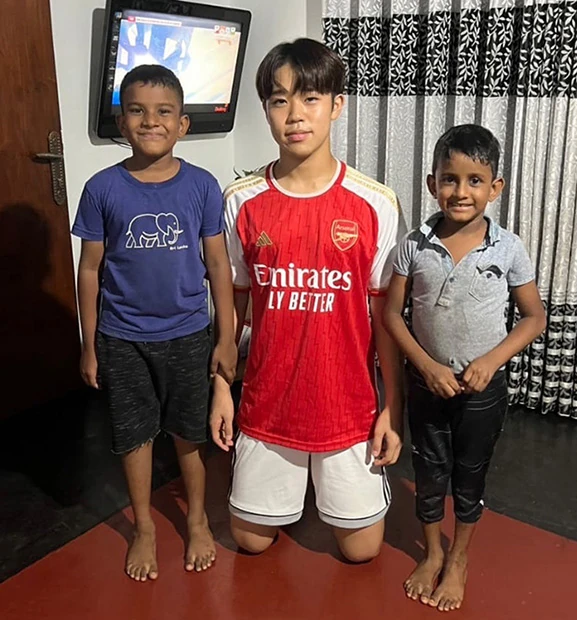
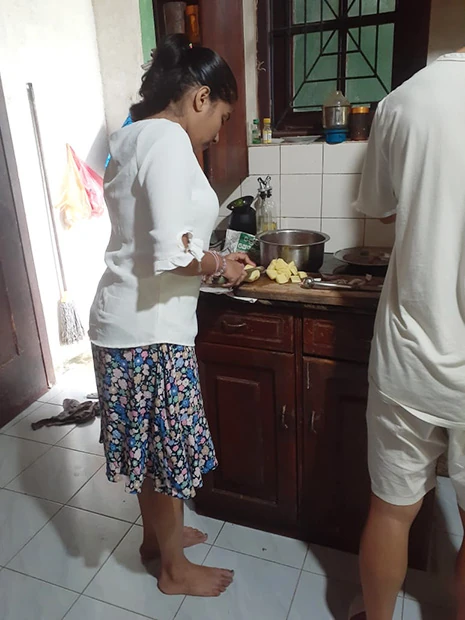
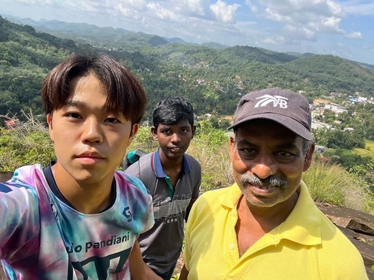
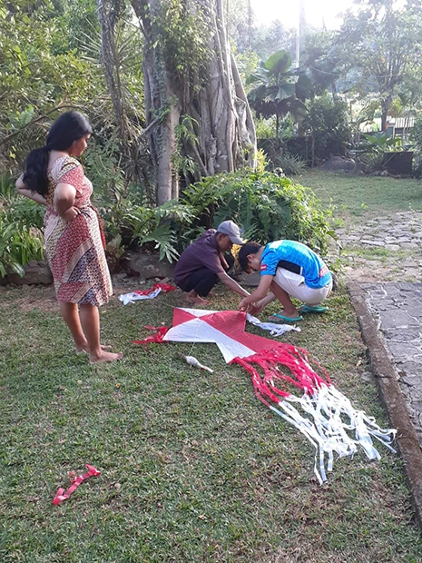
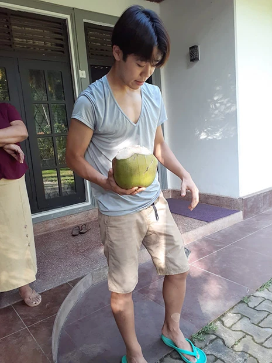

「今回の留学は私にとって初めて1人で海外に行く体験でした。
その為、最初は言語のことは勿論、食文化やライフスタイルのギャップなど不安なこともありました。
しかし実際行ってみると、ホストマザーが私のレベルに合わせた英語で会話をしてくださったので少しずつ英語を話す•聞くことに関して自信がつき、英語を使うことに関しての抵抗も無くなっていきました。
また最初は不安だった食事もホストマザーが私が辛いものがあまり食べれないと話したので最初は甘口、そこから徐々にスパイスを加えていくという方法で食文化にも徐々に慣れました。
私は普段あまり新しい食べ物には挑戦しない性格なのですが、今回の留学中を通して、今まで食べたことがない様々な野菜やフルーツを食べることができました。
その中でも特に野菜だとドラムスティック、フルーツだとパパイヤがとても美味しかったです。
そして今回の留学中の1番の目的であった英語の授業は私が今まで体験してきた学校や塾の英語の授業とは全く異なり、スピーキングがメインの授業でした。


毎日、なにかお題を決めてそれに関して日本とスリランカの情報を交換するというスタイルで行なっていました。
最初のうちは言葉に詰まることや沈黙の時間もあったけど、徐々に言い回しが増えたり、頭の中での作文の時間が減り会話ができるようになりました。
また授業外でも質問に応じてくれたり、おすすめのリスニング教材を紹介して下さったので帰国して今日本でも毎日リスニングをしています。
最後にホストファミリーや現地の人との生活についてです。
ホストファミリーはとにかく優しく、ホストマザーは僕が好物のスムージーを朝作ってくれたり、毎食美味しい料理を作ってくれて毎日の食事や時間が楽しみでした。
ホストファザーとは2日に1回、夕方の授業後に2人で筋トレをしたり夕食の時に日本のニュースの話をして盛り上がったりしていて毎日が充実していました。
またホストマザーの日本語の生徒さんとも毎週会って一緒に料理をしたり、買い物に行ったりする機会がありとても新鮮で楽しかったです。


他にも近所の子達と一緒にバレーボールをしたり、凧を作ったり色々な経験ができました。
上記のような今回の留学を通して、スリランカの人の温かさや地域、親戚のコミュニティの強さを感じました。
また、個人的にシギリヤロックやガル、や他の世界遺産にもいきましたが、どこも圧巻でした。
しかし、日本人にとってスリランカという国はあまり身近な国ではないし知らない人も多いので、より多くの人にスリランカの魅力を知って欲しいと感じました。
また大学の長期休みの際にホストファミリーに会いにスリランカへ行きたいです。」